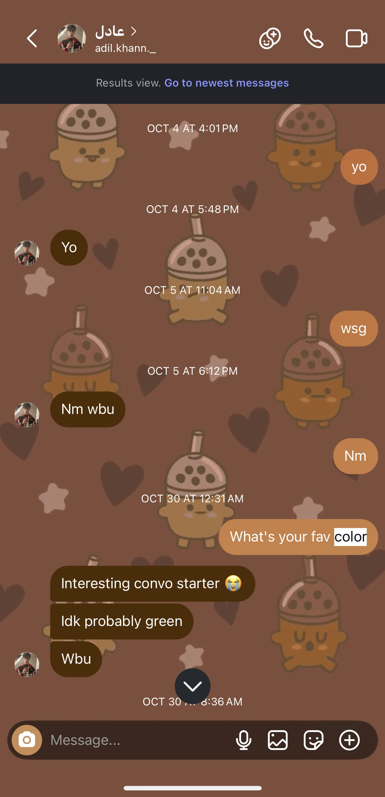
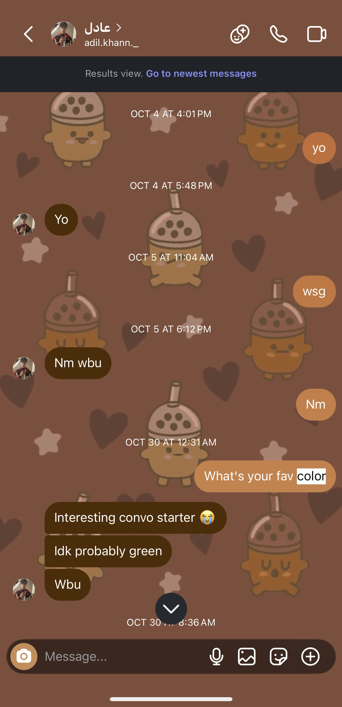
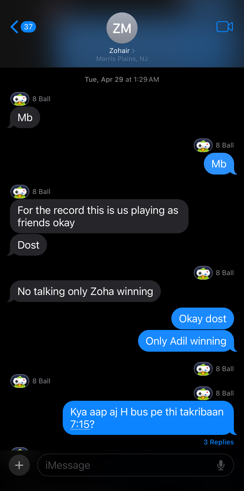
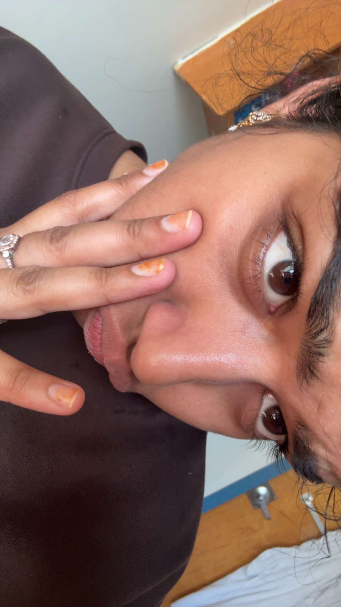
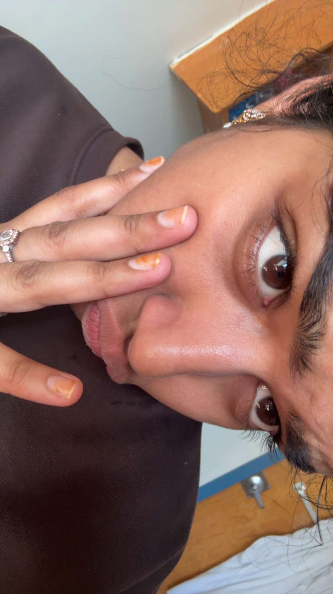
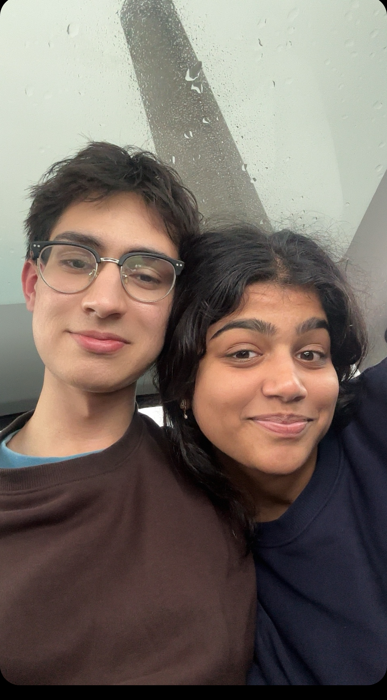
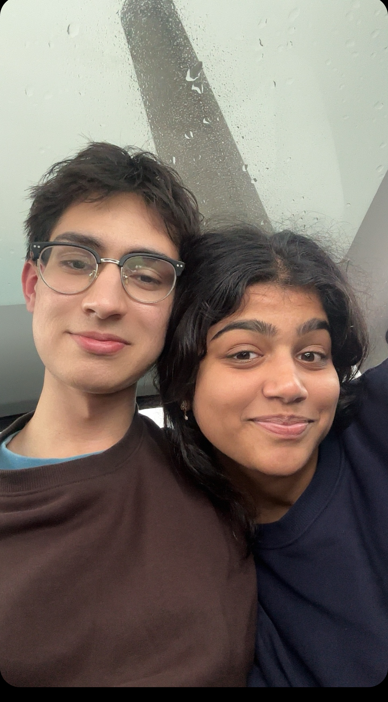

First Contact
After finding Adil cute, Zoha decided to shoot her shot and message "yo". Adil replied with "yo" back and after asking wsg, they stopped speaking until October 30th where Zoha asked the imfamous question: "What's your fav color"
After finding Adil cute, Zoha decided to shoot her shot and message "yo". Adil replied with "yo" back and after asking wsg, they stopped speaking until October 30th where Zoha asked the imfamous question: "What's your fav color"
After Adil was stupid and didn't continue talking to Zoha in October, they met again in Khoka when Zoha asked Adil "are the fries hot." The fries weren't spicy at all, but Adil was hoo haaing because they were hot. Zoha looked beautiful that day and Adil was mesmerized by her beauty. He requested to follow her on Instagram and she accepted. They started talking again the following day and continued to talk all day.
Zoha had decided the day before that she would not talk to Adil anymore, but she saw him at the magnet making station. They talked to each other in person for the first time and Adil was telling her about how much Indians want to be Pakistani. At the end of the conversation, Zoha was given a Pakistan magnet as a gift. They decided to talk only until the end of IAW week. Throughout the week, they kept seeing each other at IAW, going on walks, and secretly texting each other.


Zoha and Adil had decided not to talk to each other ever again as finals were approaching. However Monday night, Adil woke up randomly at 1:32am and saw that he had gotten a 8-ball from Zoha. Zoha claimed that she accidently sent the 8-ball, but they still played and Adil obvisouly won. They talked more and more on Tuesday, until Adil confessed he wants to talk to Zoha and can't stop thinking of her. Zoha pleaded that she couldn't talk with Adil, but they still somehow carried the conversation all day, even sharing baby pictures of each other. They continued to talk all day and night until Zoha said they need to stop because she needs to lock in for finals.
On Thursday May 1st, Adil texted Zoha if she's willing to go on a walk, while her friends went to the mock shadi. Zoha agreed to, but when they got on the bus to get chocolate strawberries from Cook Cafe, they saw their best buddy Risay. Zoha tried hard to get Risay to leave, and finally he left so Zoha and Adil enjoyed a long walk together. At the end of the night, Zoha had Adil to forget her and she's not worth fighting for. Adil was hurt and didn't believe that, but he knew he needs to leave her alone. While Adil was driving back home all upset, Zoha called Adil and asked him if he really likes her. They continued to talk all night and Zoha asked if Adil wanted to sleep on call and he accepted.

In the morning they woke up around the same time and made a plan to meet up. Zoha had told Adil last night to come to her dorm in the morning, but Adil thought she regretted saying that, so he invited her to Alex instead. Zoha took forever to get ready and they only got 30 minutes with each other in Alex. After Comp Arc, Adil came to Zoha's dorm for the first time. He thought it was small and cozy, and he was going to sit on the chair, when Zoha told him to go on the bed and relax. She offered him flatbread from the atrium and eventually she also got on the bed and they got closer and closer, until Zoha held Adil's hand, and he held it back. They also took their first ever photo together that day. That day was full of firsts for them.
Look how cute Zoha looks wearing Adil's brown crewneck. Adil gave it to her on Friday when he came to her dorm, and it was full of his cologne.
 

Saturday, Zoha really wanted to see Adil, so they made a risky plan to meet up in the night. Adil told his parents he is going to Truly Yogurt with his friends, but in reality he turned on airplane mode and went to Zoha. Zoha picked Adil up at the parking lot and they took a nice long walk on College Ave before they went in her dorm. When they went in, it was raining heavily and Zoha turned off the light and layed next to Adil. They got close to each other, to the point Zoha was laying on Adil's chest. It was quiet and peaceful and comfortable, and time flew by because it was 11:30 pm and Adil was still in her dorm. In a moment of panic, Adil left immediately and the panic contributed to making Zoha emotional about everything. On the drive home, Zoha called Adil and began to cry and saying that they can't be together no matter what. While Zoha was crying in Adil's ear, his mom came up to him and told him to end his chakar with the girl, which contributed to making Adil really mad. Adil told Zoha in a really stern tone that he's 100% serious about Zoha and that she needs to either decide to accept his love or leave forever. Zoha decide to accept his love and they both confessed their love for each other.
On Monday, Zoha invited Adil to come to her financial accounting class, and after she finally accepted to go in Adil's car. The plan was to go from Livi to College Ave and then lock in, but when they got to the parking deck, all they could do is hold hands and stare at each other. Eventually after little restraint, they decided to go in the backseat and eventually they wrapped each other in their arms and cuddle for the first time. They cuddled, hugged, and yapped for hours, while their scents traded with each other. They spent more than four hours cuddling on the top floor of the parking deck.
 


After deciding to end things officially and lock in for finals, Adil was in Alex and decideed to text Zoha because he was overthinking something. Zoha decided to call Adil to see what's up, and even though they talked on the phone of not continuing to talk, she invited him to go to Cook Cafe for Monsters. Cook Cafe was closed, so Adil decided to take Zoha on a car tour of Rutgers campuses, and eventually they settled down ar Livi for Kilmer's market. After Zoha got her snakcs and knock off Monster from Kilmer's, she told Adil that he has until 1:30 to do whatever, so Adil took Zoha out for food for the first time. They went back to where they started everything Khoka, and afterwards they went to Target in search for matching couple bracelets. They couldn't find any bracelets, but Adil had the fantastic idea of bra strap bracelets, which Zoha rejected initially. Eventually Zoha's roommate went back to her house for the weekend and Adil came over, and this time instead of cuddles, they locked in for finals all night.


Zoha's Birthday was on May 7th, but they stopped speaking to each other then, so Adil couldn't get her any gifts. However, on Friday, Adil decided to surprise Zoha with a late birthday gift. He got her a poop plushie (it was actually Harry Potter but Adil is stupid) and a cute little card. Zoha was so happy and surprised to see the gift, and she loved it so much. Zoha decided to reward Adil with cuddles and hugs for an hour, and towards the end, Adil for the first time kissed her on the cheek.
more kisses... a lot of kisses on the neck hehe
This was supposed to be goodbye forever, but someone "accidently" left their headphones in the car...
Post accounting final, Zoha was finally free of school and stress for three and a half months. Adil was there after her accounting final to pick her up, and he surprised her with a rose for being so awesome. They went to Truly Yogurt where Zoha got her favorite coco mango smoothie. They went to the parking deck and drank their smoothies while watching Netflix in the Tesla, and then they went in the backseat to cuddle and 50 kisses on each cheek. After a short break, Zoha took a shower and Adil walked around the Academic Building, but they reunited and went to Livi dining hall for one last dinner. While on their way back to Zoha's dorm, her parents called and wanted her to come home that night, and Zoha panicked and started making excuses to not have them come. Her parents ended up not coming, and many things happened that night, including Zoha and Adil's first kiss.

Zoha called Adil late at night and told him that she wants to be together. After so many highs and lows, tears, leaving each other, and breaking no contacts, May 16th was their official anniversary.
Opening up about the past, sharing regrets and hurtful moments, being vulnerable with each other, creating boundaires, and falling more in Love with each other. Anayah and Zohair lol.